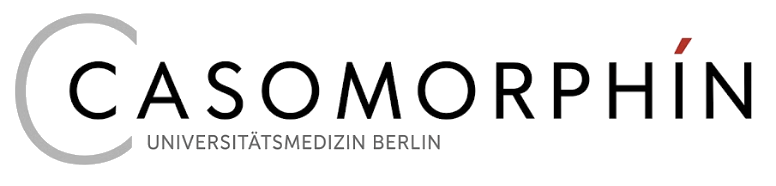
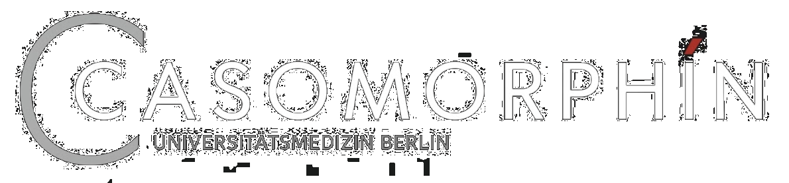

Casomorphin ist eine Weiterentwicklung des Altklausuren-Ordners „Kreuzfahrt". Ich habe mir erlaubt, Fragen, die eventuell so (oder so ähnlich) schon einmal geprüft wurden, wiederzuverwenden und in eine saubere, digitale und optional gamifizierte All-in-one-Plattform zu stecken. Egal ob du vor der Klausur nur schnell ein paar zufällig zusammengewürfelte Fragensätze lösen, während des Semesters schon gezielt die auf Lernziele und Modulwochen gemappten Fragen üben oder einfach ein bisschen mehr Spaß beim Lernen haben willst – es ist für jeden etwas dabei. Bei der Menge an Daten kann ich natürlich nicht für absolute Richtigkeit und Vollständigkeit garantieren … aber das gilt in der Medizin ja ohnehin für fast alles, was wir lernen. Über die „Hilfe" könnt ihr mir jederzeit direkt Feedback oder Verbesserungsvorschläge schicken!
Das ist der Stoff, der beim Verdauen von Käse entsteht – und gern mit Koks, Crack und Heroin verglichen wird. Käse macht halt süchtig. Käse beim Lernen hoffentlich auch.
Nimm das gern und teile es mit deinen Kommilitonen! Da es ein rein studentisches Projekt ist, wäre es schön, wenn es vorerst unter Studierenden bleibt (siehe auch Hinweis & Haftungsausschluss unten).